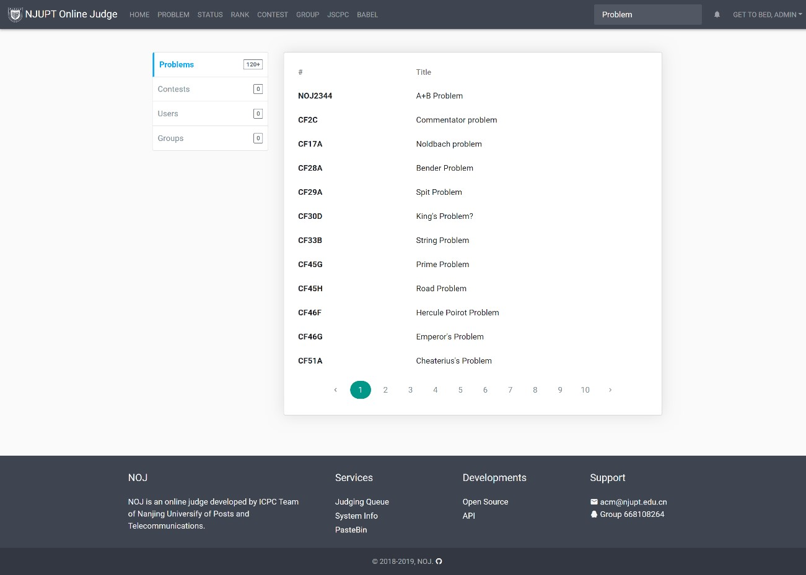

NOJ在线测评系统
NOJ在线测评系统最早于2008年开始开发
初代版本发布为遵守GNU协议的自由软件，随后几年系统逐步改进。团队于2018年开始了漫长的新版本研发过程并逐步将其发展为一款成熟的产品。目前，NOJ在线测评系统是市面上首款同时实现了跨测评系统资源共享与内存虚拟化安全测评技术的在线测评系统。
NOJ在线测评系统是一个典型的客户端服务端系统，客户端支持Windows、安卓、iOS、鸿蒙多个操作系统，服务端则支持Windows、Linux等主流操作系统，值得一提的是，NOJ在线测评系统拥有很高的系统兼容性，特别支持了国产“龙芯”架构与该架构下的一键部署，极大地方便使用者并拓展了国产应用生态。
NOJ在线测评系统支持本地测评与虚拟测评两种模式，通过独创的跨测评系统资源共享实现了对于第三方系统的调用，可以轻松完成大量的算法自动化正确性测试流程。本系统支持大量主流语言，包括C、C++、Java、C#、Python、PHP、Javascript与Go等等。
NOJ在线测评系统在安全性、高效性、易用性、架构现代性、资源拓展性等多个方面均处于市场前列，特别是安全性方面，独创内存虚拟化+系统级恶意函数阻断双重保险，确保了企业级服务的流畅运行。
NOJ在线测评系统社区版一经推出，就受到了广大开源社区用户的关注，尤其在资深开源社区贡献者群体里中拥有良好的用户口碑。目前，NOJ在线测评系统在全球最大开源社区GitHub上热度不减，攀升到了在线测评话题下热度TOP3。
NOJ在线测评系统在安全性、高效性、易用性、架构现代性、资源拓展性等多个方面均处于前列
-
安全沙箱隔离
本公司的系统通过虚拟沙箱而非传统的阻断函数实现了对评测代码的严格隔离，目前处于国内外领先地位，同时公司还引入了专业级的资源限制。对于传统系统来说，自动测评的代码都是切切实实可以运行的代码，一旦出了问题会导致企业级服务瘫痪，对于企业造成非常大的损失，因此研制安全技术一直都是此类系统的重中之重。相较同类的HUSTOJ、UVa等系统，大多采用基于特定语言的语义分析去排查代码中的恶意问题并加以隔离或将整台机器作为一个隔离环境，浪费了计算资源也无法保证安全防护的有效。公司采用的虚拟沙箱技术仅仅“按需隔离”必要计算环境，并不会对系统产生威胁，同时采用系统级函数阻断，通过阻止代码对于系统内核的特定操作调用实现了语言无关的恶意函数阻断并提供了更多进程数据用于分析代码的复杂度。
-
BABEL包管理
BABEL包管理是整个在线测评领域的一次革新，通过公司设计的全新的NOJ Babel包管理程序，实现了对于第三方在线测评系统和第三方评测机的包管理与在线测评市场的融合，使得用户可以同时通过一套体系接触到多个系统的资源，这也属于业内首创的技术。系统通过对整个在线测评流程进行抽象化操作，再通过第三方包对其进行实例化，实现了可拓展的第三方远程测评。包管理实现了对于市场上第三方在线测评的一键引用，目前公司与Vijos等第三方在线测评平台提供商达成了API接口合作，解决了传统情况下训练不能跨平台、某平台局限性等痛点。同时通过包管理系统还实现了对于市面上评测机的兼容，只需要更换一个评测机的服务提供包即可，目前NOJ支持的评测机有NOJ_JudgeServer与HUSTOJ评测机，原先的其他系统使用者可以通过本方式一键切换NOJ。本评测系统还包括了一个题目的通用交换格式，可以使题目的迁移更加方便高效，同时也使得题目的添加更加快捷。
-
评测机、主系统分离
系统的设计上，本系统创新性的采用了评测机主系统分离的模式，评测机分为评测机网络服务与评测机判题核心，网络服务采用了Python+Gunicorn的架构，实现了通用接口与各类资源限制的调用；评测机判题核心采用了C语言配合seccomp实现了对危险调用的阻断和资源限制。
-
先进架构、单元测试、可回滚
本项目使用了MVVM分层设计结构，分为模型、视图、视图模型与绑定器。这样一方面系统低耦合，第二系统具有高度可重用性，第三是可测试。相较目前主流竞品大多使用原生高耦合设计思路与框架而言，在系统可维护层面本系统拥有极大优势。
-
系统线程级任务调度、高速缓存、分布式负载均衡测评、数据库读写分离
目前市面上的在线评测系统因为需要实时对使用者提交的源代码进行编译、运行、监控，同时又要完成大量网络请求的并发访问，所以对服务器系统的性能要求极高。本系统设计中考虑到了对于老旧系统的兼容，并且针对此进行了大量优化，包括高耗时任务转换持久化高速缓存等等，并且对主服务与测评服务进行进一步分离，分布式负载均衡测评，数据库读写分离。本项目目前已经应用于华为杯、江苏省大学生程序设计竞赛等多个省级、校级比赛中，且系统仅需一台2G内存服务器即可支援峰值250次/分钟的评测队列评测，充分说明了系统的高兼容性与稳定性。
-
“龙芯”赋能，拓展国产架构应用
本系统拥有极强的兼容性，目前可以部署在树莓派等轻量化系统且可运行全部功能，并且评测机架构还支持国产“龙芯”芯片，这一层面上系统补足了国产芯片生态中的一块短板，丰富了国产芯片下应用的开发、测评环境。
-
测评
作为一个在线测评系统，NOJ将自身基础的测评功能完善到了相当的程度，除此以外还提供了基于核心的测评功能以外的一些延展性的功能。比如排名系统，排名系统通过用户的过题数与用户的社区贡献综合排名，社区贡献指用户发表的题解等。
除此以外，在题目资源方面NOJ目前拥有丰富资源，包括题目两千余条、同时拥有第三方题目总计数万条。通过跨平台的题库，组织者不仅可以选择多样化的难度分层，更可以根据特定算法类型选择对应题目。同时，NOJ支持题目的ElasticSearch搜索与标签检索，用户可以通过搜索功能轻松获得自己想要找的题目进行针对性的训练。系统也支持智能推荐相似的算法训练。
-
在线沉浸式编辑器
作为一个现代化的在线测试系统，用户在使用NOJ训练的过程中进入某一具体的题目后，可以选择沉浸式编辑器与普通题目视图两种模式，普通视图下右上角将会标注各项功能，包括题解、讨论、代码提交等等，而沉浸式编辑器模式下则提供编辑器视图与题目视图两种交叉视图切换与更多题目信息。此外，无论在何种视图用户都可以通过一个叫“马克笔”的功能进行拖拽选择对题目内容进行标注。
不同于多数测评系统，NOJ充分考虑用户体验，在沉浸式编辑器打开时会保留该题上一次提交的代码。
此外，在后面将会提到的比赛模式下，普通题目视图将会不可见，只提供沉浸式编辑器视图。此时，历史记录也只会显示本次比赛的提交。
-
社会化
NOJ提供了丰富的社会化功能，例如题解系统与社区系统，用户可以通过发表题解获取社区贡献值并通过社区贡献提升自己的排名。题解还能帮助初学者理解大神的思路，促进学术交流。
在题解中，用户还可以选择支持或者反对某个题解，对于特定题解做出反馈。题解使用Markdown格式，可以随时切换编辑与预览模式，并且支持公式插入。
-
搜索
NOJ支持题目、比赛、小组、用户的检索。检索功能支持多个维度，例如题目的描述，题目的输入输出，题目的编号、标题等等。
通过搜索功能可以快速定位相应的测试数据集和对应的描述文件，同时也方便系统管理员对于各项数据的维护、定期整理。
-
群组
考虑到集体训练与教学分班的需求，NOJ提供完善的群组功能，用户可以创建小组来进行小组范围内的比赛、群组范围内的成员管理、发布组内公告等多个能力。各个群组可以拥有自己单独的题库、上传自己的题目等。考虑到集体训练的需求，群组还特地提供了训练赛功能。
同样的，考虑到群组管理员操作的便利性，NOJ还为群组管理者提供了操作简易、数据直观、多样化的群组管理工具，包括群组信息设置、群组成员操作、群组题目集操作、群组比赛管理、转让群组、解散群组等功能，如下图，所有群组比赛均可指定负责人，群组负责人与比赛负责人共同管理某一场比赛。
-
统计
群组负责人可以通过查询训练赛成绩动态查阅组员的各项情况。通过Elo智能能力分数可以判断群组成员竞赛能力的相对变化。考虑到我们还提供了可视化的能力曲线功能让训练的负责人可以直观地了解成员的能力提升。
除此以外，为了更密切地了解参训人员对多个方向知识地掌握程度，我们允许为题目贴上标签，对于有标签的题目，提供了雷达图等方式直观地体现用户在各个类型题目上面有何或者缺陷与突出的地方。
此外，我们还结合大数据推出了用户知识点能力图，用户可以直观的知道自己在什么类别地题目上存在着缺陷从而进行针对性的训练。训练负责人员也可以轻松掌握学生当前的水平从而把握提升的方向。
-
统计
在传统算法领域对我们来说提升一般是通过一场场的竞赛去锻炼，所以NOJ对各类竞赛有着完善的支持，完美地支持标准ICPC比赛、标准CCPC比赛、标准NOI/IOI比赛与标准NOIP比赛几个类别，目前最常用的是ICPC比赛。比赛组织者可以自由设置比赛题目数量，比赛封榜时间、比赛公开度、发送比赛公告、回答提问等等。通过在NOJ举办公开比赛，组织者可以获得更多功能的使用权，包括用于防作弊的代码查重、留作存档或者线下竞赛的题面PDF生成、用于公开比赛的生成比赛账号等等。

在比赛题目页内，NOJ会显示比赛题目与当前状态，比赛倒计时和比赛公告，同时，比赛公告将会实时以弹窗形式推送给用户。实时推送的比赛公告采用了交互查询的方式，对系统压力影响极小。比赛题目页内部也采用了完全沉浸式设计，提供专业、一流的比赛、评测体验。
在比赛榜单页内，NOJ会高亮当前用户，对于每题的第一次成功解答将会使用深绿色加粗显示。同时对于同步赛NOJ也支持查看远程队伍的排名与交题、过题记录等。
在比赛状态页内，NOJ会高亮当前用户的提交，比赛组织者可以选择状态的公开度。不同的错误将会使用不同的颜色标出，并且还将显示用户名、时空消耗、编译语言等，此外本页面还支持评测结果与用户名、题目筛选。
在答疑页内，公告是实时推送的。对于答疑，用户可以点击左上角提问题，比赛管理者将会组织回复并决定本次问题是否公开。
-
NOJ Babel —— 资源整合
NOJ Babel实现了对现在大多数在线测评系统以包管理形式的资源整合。我们将UVa、CodeForces等知名测评系统封装成NOJ支持的包并且通过我们的包管理程序进行管理。通过babel机制实现了对某一个测评系统的快捷安装与卸载。此外，还实现了题目导入、提交测评、抓取结果等多个接口，并且提供了一套统一的标准以让开发者可以把任何一个测评系统接入我们的平台。